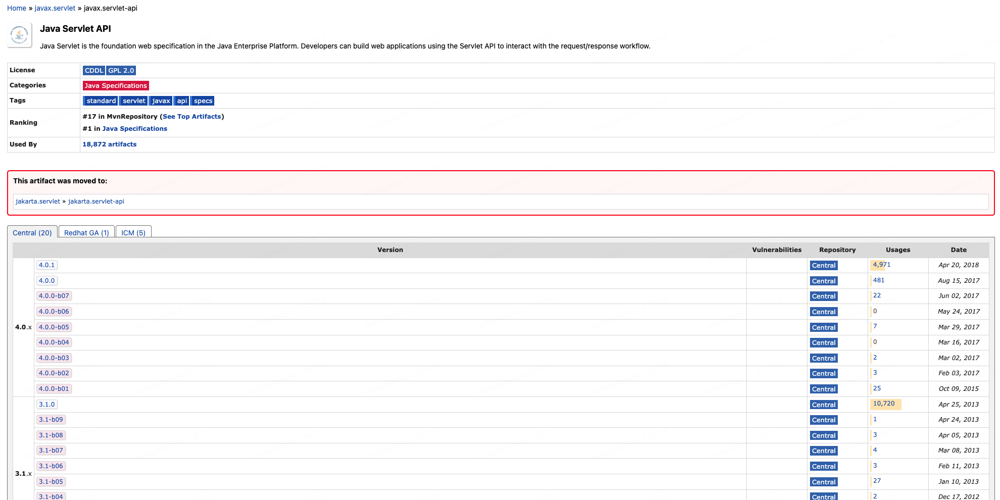
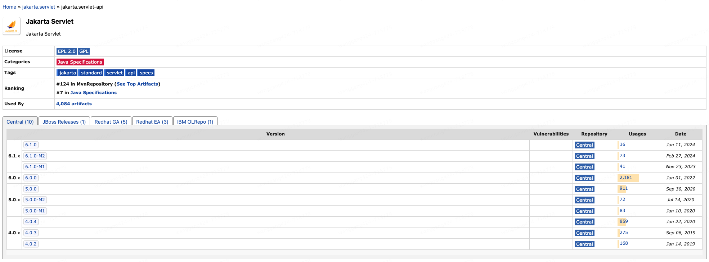
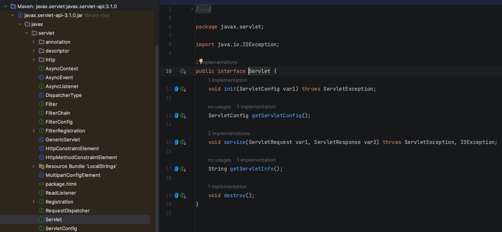
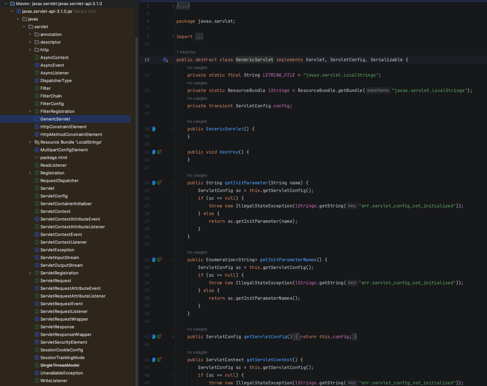
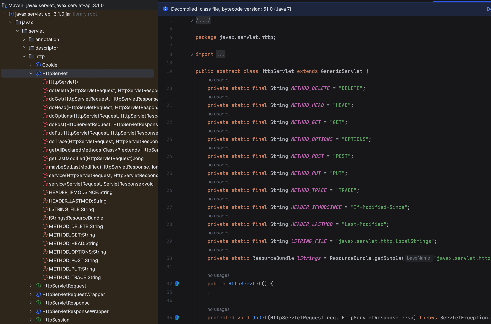
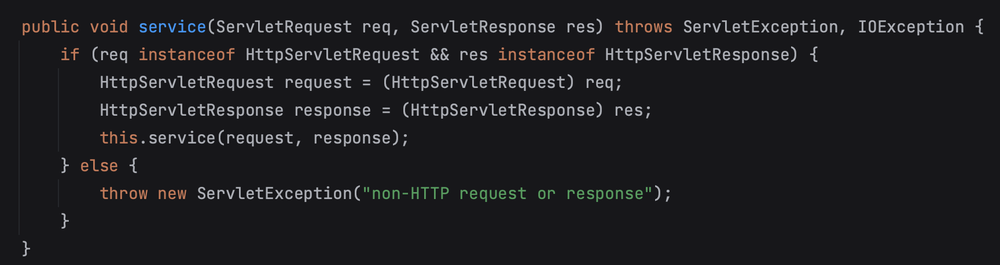
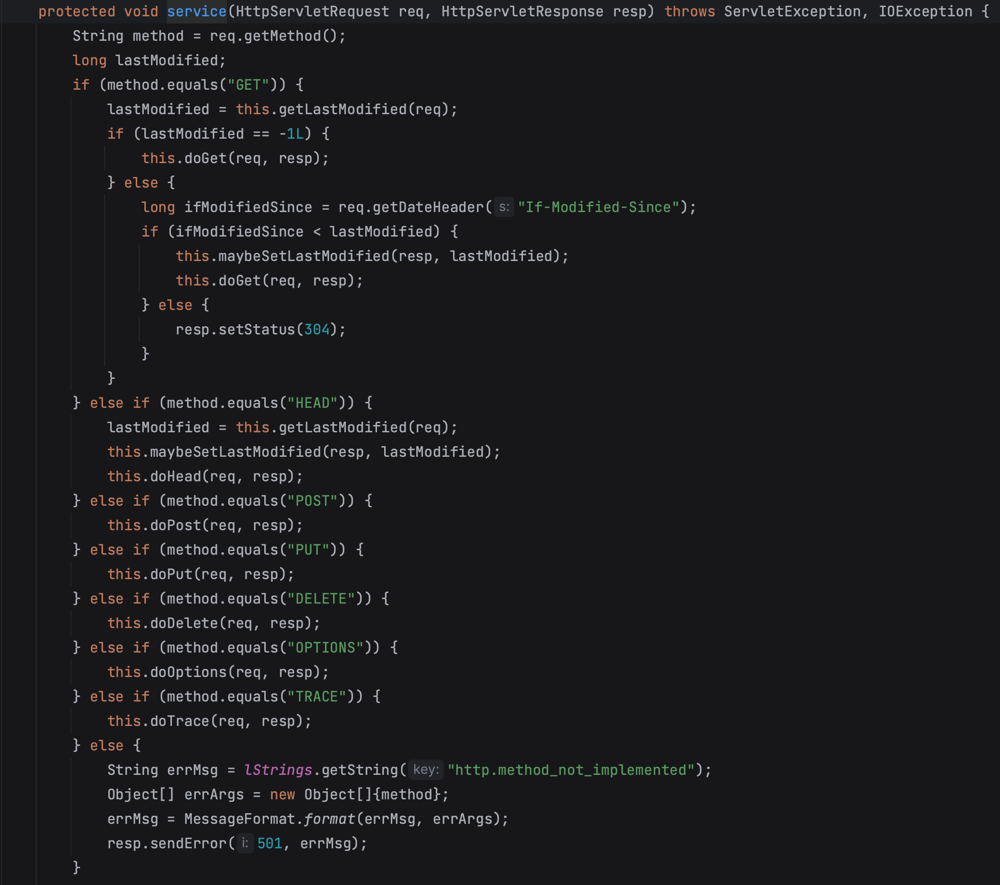
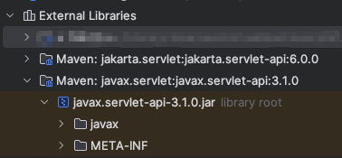

本书作者：测试开发刚哥，文章版权归个人所有，未经授权请勿转载。
Servlet 版本
Oracle 将 Java EE（Java SE 还自己保留）交给开源组织，Eclipse 基金会接手。但 Oracle 不允许开源组织使用 Java 名号，所以 Jakarta EE 名称于 2018.02.26 应运而生。
正是因为组织变化，Servlet 被割裂为了 2 个版本，javax.servlet和jakarta.servlet。
javax.servlet已经停止维护，但它仍然是一个非常有用和重要的技术，特别是在许多现有项目中，学习和使用它将为你提供坚实的 Web 开发基础。

<dependency>
<groupId>javax.servlet</groupId>
<artifactId>javax.servlet-api</artifactId>
<version>3.1.0</version>
<scope>provided</scope>
</dependency>
如果希望使用 Jakarta EE 9 或更高版本的 Servlet API，则需要切换到javax.servlet。

<dependency>
<groupId>jakarta.servlet</groupId>
<artifactId>jakarta.servlet-api</artifactId>
<version>6.0.0</version>
<scope>provided</scope>
</dependency>
本文将基于javax.servlet来介绍 Servlet，从 Usages 来看，它仍然是使用最广泛的。
Servlet API
Servlet API 主要有 2 个包，javax.servlet包含了 servlet 和 web container 使用的接口和类。javax.servlet.http包含了 http 相关的接口和类。
javax.servlet接口列表：
- Servlet
- ServletRequest
- ServletResponse
- RequestDispatcher
- ServletConfig
- ServletContext
- SingleThreadModel
- Filter
- FilterConfig
- FilterChain
- ServletRequestListener
- ServletRequestAttributeListener
- ServletContextListener
- ServletContextAttributeListener
javax.servlet类列表：
- GenericServlet
- ServletInputStream
- ServletOutputStream
- ServletRequestWrapper
- ServletResponseWrapper
- ServletRequestEvent
- ServletContextEvent
- ServletRequestAttributeEvent
- ServletContextAttributeEvent
- ServletException
- UnavailableException
javax.servlet.http接口列表：
- HttpServletRequest
- HttpServletResponse
- HttpSession
- HttpSessionListener
- HttpSessionAttributeListener
- HttpSessionBindingListener
- HttpSessionActivationListener
- HttpSessionContext (deprecated now)
javax.servlet.http类列表：
- HttpServlet
- Cookie
- HttpServletRequestWrapper
- HttpServletResponseWrapper
- HttpSessionEvent
- HttpSessionBindingEvent
- HttpUtils (deprecated now)
Servlet 接口

Servlet Interface 定义了所有 servlet 必须具有的行为。主要方法如下：
-
public void init(ServletConfig config) 初始化，只会被 web container 调用 1 次
-
public void service(ServletRequest request, ServletResponse response) 接收请求，返回响应，每次请求都会调用 1 次
-
public void destroy() 销毁，只会被 web container 调用 1 次
-
public ServletConfig getServletConfig() Servlet 配置
-
public String getServletInfo() Servlet 信息
以下是代码示例：
import java.io.*;
import javax.servlet.*;
public class First implements Servlet {
ServletConfig config = null;
/**
* 初始化
* @param config
*/
public void init(ServletConfig config) {
this.config = config;
System.out.println("servlet is initialized");
}
/**
* 服务
* @param req
* @param res
* @throws IOException
* @throws ServletException
*/
public void service(ServletRequest req, ServletResponse res)
throws IOException, ServletException {
res.setContentType("text/html");
PrintWriter out = res.getWriter();
out.print("<html><body>");
out.print("<b>hello simple servlet</b>");
out.print("</body></html>");
}
/**
* 销毁
*/
public void destroy() {
System.out.println("servlet is destroyed");
}
/**
* 配置
* @return
*/
public ServletConfig getServletConfig() {
return config;
}
/**
* 信息
* @return
*/
public String getServletInfo() {
return "copyright 2007-1010";
}
}
GenericServlet 类

GenericServlet 是个抽象类，实现了 Servlet, ServletConfig, Serializable 接口，能处理任何请求，支持任何协议。主要方法如下：
- public void init(ServletConfig config) 初始化
- public abstract void service(ServletRequest request, ServletResponse response) 接收请求，返回响应，每次请求都会调用 1 次
- public void destroy() 销毁，只会被 web container 调用 1 次
- public ServletConfig getServletConfig() Servlet 配置
- public String getServletInfo() Servlet 信息
- public void init() 无参初始化
- public ServletContext getServletContext() Servlet 上下文
- public String getInitParameter(String name) 根据参数 name 返回 value
- public Enumeration getInitParameterNames() web.xml 所有参数
- public String getServletName() Servlet 名称
- public void log(String msg) 记录 Servlet 日志
- public void log(String msg,Throwable t) 记录 Servlet 日志和异常堆栈
以下是代码示例：
import javax.servlet.GenericServlet;
import javax.servlet.ServletException;
import javax.servlet.ServletRequest;
import javax.servlet.ServletResponse;
import java.io.IOException;
import java.io.PrintWriter;
public class First extends GenericServlet {
public void service(ServletRequest req, ServletResponse res)
throws IOException, ServletException {
res.setContentType("text/html");
PrintWriter out = res.getWriter();
out.print("<html><body>");
out.print("<b>hello generic servlet</b>");
out.print("</body></html>");
}
}
HttpServlet 类

HttpServlet 继承了 GenericServlet 抽象类。主要方法如下：
-
public void service(ServletRequest req,ServletResponse res) dispatches the request to the protected service method by converting the request and response object into http type.（这里结合英文解释比较清楚，转换类型后，调用第 2 个 service）

-
protected void service(HttpServletRequest req, HttpServletResponse res) receives the request from the service method, and dispatches the request to the doXXX() method depending on the incoming http request type.（这里结合英文解释比较清楚，根据不同 method，调用 doXXX()方法）

-
protected void doGet(HttpServletRequest req, HttpServletResponse res) 处理 GET 请求，web container 调用
-
protected void doPost(HttpServletRequest req, HttpServletResponse res) 处理 POST 请求，web container 调用
-
protected void doHead(HttpServletRequest req, HttpServletResponse res) 处理 HEAD 请求，web container 调用
-
protected void doOptions(HttpServletRequest req, HttpServletResponse res) 处理 OPTIONS 请求，web container 调用
-
protected void doPut(HttpServletRequest req, HttpServletResponse res) 处理 PUT 请求，web container 调用
-
protected void doTrace(HttpServletRequest req, HttpServletResponse res) 处理 TRACE 请求，web container 调用
-
protected void doDelete(HttpServletRequest req, HttpServletResponse res) 处理 DELETE 请求，web container 调用
-
protected long getLastModified(HttpServletRequest req) 上次修改时间
如果想深入学习 Servlet API，可以在 Maven pom.xml 引入 servlet 包依赖，External Libraries 查看源码。

参考资料：
https://www.javatpoint.com/servlet-api
https://www.javatpoint.com/Servlet-interface
https://www.javatpoint.com/GenericServlet-class
https://www.javatpoint.com/HttpServlet-class
ChatGPT